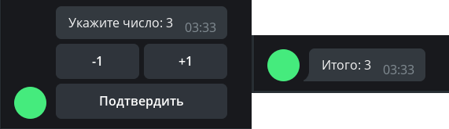

Tugmalar¶
Ushbu bobda ishlatilayotgan aiogram versiyasi: 3.7.0
Bu bobda biz Telegram botlarida keng qo'llaniladigan tugmalar bilan tanishamiz. Avvalo, chalkashliklarning oldini olish uchun tugmalar turlarini ajratib olamiz. Qurilmangiz ekranining pastki qismida, matn kiritish oynasi ostida joylashadigan tugmalarni oddiy tugmalar deb ataymiz. Xabarlarga bevosita biriktiriladigan tugmalar esa inline tugmalar hisoblanadi. Quyidagi rasmda bu ikki turdagi tugmalarni ko'rishingiz mumkin:

Oddiy tugmalar¶
Tugmalar matn shabloni sifatida¶
Ushbu turdagi tugmalar 2015 yilda Bot API bilan birga paydo bo'lgan (Contact, Location va boshqa bir nechta alohida holatlar bundan mustasno ular haqida keyinroq gaplashamiz) va ular xabar shablonlari hisoblanadi. Ishlash usuli oddiy: tugmada nima yozilgan bo'lsa, aynan o'sha narsa joriy chatga yuboriladi (siz bunday holatda tugma bosish o'rniga aynan tugmadagi matnni chatga yuborish orqali bir xil natija olishinggiz mumkin). Shuning uchun bunday tugma bosilishini qayta ishlash uchun bot kiruvchi matnli xabarlarni oldindan bilishi kerak.
Keling /start buyrug'ini bosganingizda ikkita tugma bilan xabar yuboradigan handler'ni yozamiz:
@dp.message(Command("start"))
async def cmd_start(message: types.Message):
kb = [
[types.KeyboardButton(text="Pyure bilan")],
[types.KeyboardButton(text="Pyuresiz")]
]
keyboard = types.ReplyKeyboardMarkup(keyboard=kb)
await message.answer("Kotletni qanday beramiz?", reply_markup=keyboard)
Telegram Bot API sizga KeyboardButton ob'ekti o'rniga faqat satrlarni belgilash imkonini berishiga qaramay,
stringdan foydalanmoqchi bo'lganingizda, aiogram 3.x ValidationError xatosini chiqaradi va bu xato emas, balki xususiyatdir.
Hozircha undan foydalanishga majbursiz ü§∑‚Äç‚ôÇÔ∏è
Botni ishga tushiramiz va unda "ulkan" tugmalarni ko'rishimiz mumkin:

Qandaydir xunuk ko'rinib qoldi shunday emasmi. Avvalo tugmalarni kichikroq qilishni, ikkinchidan ularni gorizontal
joylashtirishni xohlaymiz. Nega ular bunday ko'rinishga ega? Gap shundaki, birlamchi holatda bunday tugmalar ilovaning standard tugmalari o'lchamida bo'ladi.
Tugmalarni kichraytirish uchun klaviatura obyektiga qo'shimcha resize_keyboard=True parametrini ko'rsatishimiz kerak.
Ammo vertikal tugmalarni gorizontal tugmalarga qanday almashtirish mumkin?
Bot API nuqtai nazaridan klaviatura — ichma ich massiv bu esa tugmalarni tashkil qiladi,
ya'ni oddiy qilib aytganda, qatorlar massivi. Kodimizni chiroyli bo'lishi uchun uni qayta yozamiz va foydalanuvchiga nima kiritishni ko'rsatish uchun
input_field_placeholder parametrini qo'shamiz, bu bizga klaviatura faol bo'lgan paytda matn kiritish maydoni fonida xira ko'rinishda biz belgilagan matnni ko'rsatadi:
@dp.message(Command("start"))
async def cmd_start(message: types.Message):
kb = [
[
types.KeyboardButton(text="Pyure bilan"),
types.KeyboardButton(text="Pyuresiz")
],
]
keyboard = types.ReplyKeyboardMarkup(
keyboard=kb,
resize_keyboard=True,
input_field_placeholder="Qanday usulda berishni tanlang"
)
await message.answer("Kotletni qanday beramiz?", reply_markup=keyboard)
Qarang - haqiqatan ham chiroyli:

Endi bunday tugmalar bosilishini qayta ishlashni botga o'rgatish qoldi. Yuqorida aytib o'tilganidek, matnning to'liq mos kelishini tekshirish kerak. Buni magic-filter F yordamida qilamiz, bu haqida esa batafsil boshqa bobda gaplashamiz:
# yangi import
from aiogram import F
@dp.message(F.text.lower() == "pyure bilan")
async def with_puree(message: types.Message):
await message.reply("Ajoyib tanlov!")
@dp.message(F.text.lower() == "pyuresiz")
async def without_puree(message: types.Message):
await message.reply("Bunday mazali emas!")

Tugmalarni olib tashlash uchun ReplyKeyboardRemove kabi maxsus "o'chirish" klaviaturasi bilan yangi xabar yuborishingiz kerak.
Masalan: await message.reply("Ajoyib tanlov!", reply_markup=types.ReplyKeyboardRemove())
Keyboard Builder¶
Tugmalarni dinamikroq yaratish uchun klaviatura yasagich (keyboard builder) dan foydalanish mumkin. Bizga quyidagi metodlar kerak bo'ladi:
add(<KeyboardButton>)— tugmani yasagich (Builder) xotirasiga qo'shadi;adjust(int1, int2, int3...)—int1, int2, int3...tugmalardan iborat qatorlarni yaratadi;as_markup()— tayyor klaviatura obyektini qaytaradi;button(<params>)— berilgan parametrlar bilan tugmani qo'shadi, tugma turi (Reply yoki Inline) avtomatik ravishda aniqlanadi.
Keling, 4×4 o'lchamdagi raqamlardan iborat klaviatura yaratamiz:
# yangi import
from aiogram.utils.keyboard import ReplyKeyboardBuilder
@dp.message(Command("reply_builder"))
async def reply_builder(message: types.Message):
builder = ReplyKeyboardBuilder()
for i in range(1, 17):
builder.add(types.KeyboardButton(text=str(i)))
builder.adjust(4)
await message.answer(
"Sonni tanlang:",
reply_markup=builder.as_markup(resize_keyboard=True),
)

Oddiy klaviatura obyektida yana ikki foydali parametr mavjud:
biri one_time_keyboard - tugmani bosilgandan keyin avtomatik ravishda yashirish uchun va ikkinchisi selective - klaviaturani
faqat guruhning ayrim ishtirokchilariga ko'rsatish uchun. Ularni ishlatishni mustaqil o'rganishingiz mumkin.
Maxsus oddiy tugmalar¶
Hozirda (Ushbu bobni yozish vaqtida) Telegramda oddiy xabar shablonlari bo'lmagan olti xil maxsus oddiy tugma mavjud. Ular quyidagilar uchun mo'ljallangan:
- joriy joylashuvni yuborish;
- telefon raqami bilan o'z kontaktini yuborish;
- so'rovnoma/viktorina yaratish;
- kerakli mezonlarga ega foydalanuvchi ma'lumotlarini tanlash va botga yuborish;
- kerakli mezonlarga ega (super)guruh yoki kanal ma'lumotlarini tanlash va botga yuborish;
- veb-ilovani (WebApp) ishga tushirish.
Ular haqida batafsil gaplashamiz.
Joriy joylashuvni yuborish. Bu yerda hammasi oddiy: foydalanuvchi qayerda bo'lsa, o'sha koordinatalarni yuboradi. Bu statik manzil bo'ladi, avtomatik yangilanadigan Live Location emas. Albatta ayyor foydalanuvchilar o'z joylashuvini o'zgartirishi mumkin, ba'zida hatto butun (Android) tizim darajasida.
O'z kontaktini telefon raqamini bilan yuborish. Tugmani bosganda (avval tasdiqlash bilan) foydalanuvchi o'z kontaktini telefon raqami bilan botga yuboradi. Ba'zi ayyor foydalanuvchilar bu tugmani bosmasdan, istalgan boshqa kontaktni yuborishi mumkin, lekin bu holatda ularga qarshi choralar ko'rish mumkin: handlerda yoki filtrda message.contact.user_id == message.from_user.id tengligini tekshirish kifoya.
So'rov/viktorina yaratish. Tugmani bosganda foydalanuvchiga so'rov yoki viktorina yaratish taklif etiladi, ular keyin joriy chatga yuboriladi. Buning uchun KeyboardButtonPollType obyektini uzatish kerak, ixtiyoriy type argumenti so'rov turi (so'rov yoki viktorina) uchun xizmat qiladi.
Kerakli mezonlarga ega foydalanuvchi ma'lumotlarini tanlash va botga yuborish. Tugmani bosgan foydalanuvchining chatlar ro'yxatidan foydalanuvchini tanlash oynasini ko'rsatadi. Buning uchun KeyboardButtonRequestUser obyektini uzatish kerak, bunda istalgan usul bilan yaratilgan so'rov ID sini va mezonlarni ko'rsatish kerak, masalan, "bot", "Telegram Premium obunasi bor" va h.k. Foydalanuvchi tanlangandan keyin bot UserShared turidagi xizmat xabarini oladi.
Kerakli mezonlarga ega chat ma'lumotlarini tanlash va botga yuborish. Tugmani bosgan foydalanuvchining chatlar ro'yxatidan chatni tanlash oynasini ko'rsatadi. Buning uchun KeyboardButtonRequestChat obyektini uzatish kerak, bunda istalgan usul bilan yaratilgan so'rov ID sini va mezonlarni ko'rsatish kerak, masalan, "guruh yoki kanal", "foydalanuvchi — chat yaratuvchisi" va h.k. Foydalanuvchi tanlangandan keyin bot ChatShared turidagi xizmat xabarini oladi.
Veb-ilovani ishga tushirish (WebApp). Tugmani bosganda WebApp ni ochadi. Buning uchun WebAppInfo obyektini uzatish kerak. Ushbu kitobda veb-ilovalar hali ko'rib chiqilmaydi.
Biroq, buni bir marta kodda ko'rgan afzal:
@dp.message(Command("special_buttons"))
async def cmd_special_buttons(message: types.Message):
builder = ReplyKeyboardBuilder()
# row metodi bir yoki bir nechta tugmadan iborat qatordan aniq foydalanish imkonini beradi. Masalan, birinchi qator ikki tugmadan iborat bo'ladi...
builder.row(
types.KeyboardButton(text="Geolokatsiyani so'rash", request_location=True),
types.KeyboardButton(text="Kontaktni so'rash", request_contact=True)
)
# ... ikkinchi qator bitta tugmadan ...
builder.row(types.KeyboardButton(
text="Viktorina yaratish",
request_poll=types.KeyboardButtonPollType(type="quiz"))
)
# ... va uchinchi qator yana ikki tugmadan
builder.row(
types.KeyboardButton(
text="Premium foydalanuvchini tanlash",
request_user=types.KeyboardButtonRequestUser(
request_id=1,
user_is_premium=True
)
),
types.KeyboardButton(
text="Forumli supergruppani tanlash",
request_chat=types.KeyboardButtonRequestChat(
request_id=2,
chat_is_channel=False,
chat_is_forum=True
)
)
)
# WebApp tugmalari hozircha yo'q, uzr :(
await message.answer(
"Amalni tanlang:",
reply_markup=builder.as_markup(resize_keyboard=True),
)

Oxirida, pastdagi ikki tugma uchun handlerlar namunasi:
# yangi import
from aiogram import F
@dp.message(F.user_shared)
async def on_user_shared(message: types.Message):
print(
f"So'rov {message.user_shared.request_id}. "
f"Foydalanuvchi ID: {message.user_shared.user_id}"
)
@dp.message(F.chat_shared)
async def on_user_shared(message: types.Message):
print(
f"So'rov {message.chat_shared.request_id}. "
f"Chat ID: {message.chat_shared.chat_id}"
)
Inline tugmalar¶
URL-tugmalar¶
Oddiy tugmalardan farqli o'laroq, inline tugmalar ekran pastiga emas, balki yuborilgan xabarga biriktiriladi. Ushbu bobda biz bunday tugmalarning ikki turini ko'rib chiqamiz: URL va Callback. Yana biri — Switch — esa inline-rejim bobida ko'rib chiqiladi.
Login va Pay tugmalari bu kitobda umuman ko'rib chiqilmaydi. Agar kimdir avtorizatsiya yoki to'lov uchun ishlaydigan kod bilan yordam bermoqchi bo'lsa, iltimos, GitHub ga Pull Request yarating. Rahmat!
Eng oddiy inline tugmalar URL turiga kiradi, ya'ni "havola". Faqat HTTP(S) va tg:// protokollari qo'llab-quvvatlanadi.
# yangi import
from aiogram.utils.keyboard import InlineKeyboardBuilder
@dp.message(Command("inline_url"))
async def cmd_inline_url(message: types.Message, bot: Bot):
builder = InlineKeyboardBuilder()
builder.row(types.InlineKeyboardButton(
text="GitHub", url="https://github.com")
)
builder.row(types.InlineKeyboardButton(
text="Telegram rasmiy kanali",
url="tg://resolve?domain=telegram")
)
# ID-tugmani ko'rsatish uchun,
# foydalanuvchida has_private_forwards flagi False bo'lishi kerak
user_id = 1234567890
chat_info = await bot.get_chat(user_id)
if not chat_info.has_private_forwards:
builder.row(types.InlineKeyboardButton(
text="Noma'lum foydalanuvchi",
url=f"tg://user?id={user_id}")
)
await message.answer(
'Havolani tanlang',
reply_markup=builder.as_markup(),
)
Kodning o'rta qismiga alohida to'xtalamiz. 2019 yil mart oyida Telegram ishlab chiquvchilari
foydalanuvchi profili havolasini o'chirish imkonini joriy qilishdi.
Agar sizda forward orqali o'tish o'chirilgan foydalanuvchi ID'si bilan URL-tugma yaratsangiz, bot Bad Request: BUTTON_USER_PRIVACY_RESTRICTED xatosini oladi.
Shuning uchun bunday tugmani ko'rsatishdan oldin, ushbu sozlamaning holatini aniqlash kerak. Buning uchun getChat metodini chaqirib, has_private_forwards maydonini tekshirish mumkin. Agar u True bo'lsa, URL-ID tugmasini qo'shishga urinish xatoga olib keladi.
Callback tugmalar¶
URL-tugmalar haqida gaplashib bo'ldik, endi esa asosiy mavzuga — Callback tugmalarga o'tamiz. Bu juda kuchli imkoniyat bo'lib, deyarli har bir botda uchraydi. Masalan, postlarga reaktsiya tugmalari (layklar), @BotFather menyusi va boshqalar. Callback tugmalarning o'ziga xos qiymati (data) bo'ladi, shu qiymat orqali dastur qaysi tugma bosilganini va nima qilish kerakligini aniqlaydi. To'g'ri data tanlash juda muhim! Shuni ham aytish kerakki, oddiy tugmalardan farqli o'laroq, callback tugmasi bosilganda deyarli istalgan amalni bajarish mumkin — pizza buyurtma qilishdan tortib, superkompyuter klasterida hisob-kitoblarni ishga tushirishgacha.
Keling, /random komandasi bosilganda callback tugmasi bilan xabar yuboradigan handler yozamiz:
@dp.message(Command("random"))
async def cmd_random(message: types.Message):
builder = InlineKeyboardBuilder()
builder.add(types.InlineKeyboardButton(
text="Meni bos",
callback_data="random_value")
)
await message.answer(
"Tugmani bosing, bot 1 dan 10 gacha son yuboradi",
reply_markup=builder.as_markup()
)
Endi esa tugma bosilishini qanday qayta ishlashni ko'ramiz. Oldin xabarlar uchun message handler ishlatgan bo'lsak, callback tugmalar uchun callback_query handlerdan foydalanamiz. Tugmaning qiymati (data) bo'yicha aniqlaymiz:
@dp.callback_query(F.data == "random_value")
async def send_random_value(callback: types.CallbackQuery):
await callback.message.answer(str(randint(1, 10)))

E'tibor bering, Telegram serveri callback yetkazib berilganini tasdiqlashimizni kutadi, aks holda 30 soniya davomida maxsus soatcha belgisi ko'rinadi. Soatchani yashirish uchun callback obyektining answer() metodini chaqirish kerak (yoki API'dagi answer_callback_query() metodidan foydalanish mumkin). Odatda answer() ga hech narsa uzatmaslik mumkin, lekin xohlasangiz maxsus oynacha (ekranning yuqorisida yoki ustida) ko'rsatishingiz mumkin:
@dp.callback_query(F.data == "random_value")
async def send_random_value(callback: types.CallbackQuery):
await callback.message.answer(str(randint(1, 10)))
await callback.answer(
text="Botdan foydalanganingiz uchun rahmat!",
show_alert=True
)
# yoki shunchaki await callback.answer()

Savol tug'ilishi mumkin: callbackni qayta ishlashda answer() metodini qachon chaqirish kerak? Asosiy qoidasi — Telegram'ga callback so'rovi olinganini unutmasdan bildirish. Men esa answer() ni har doim oxirida chaqirishni tavsiya qilaman. Chunki agar callbackni qayta ishlashda xatolik yuz bersa va botda istisno chiqsa, foydalanuvchi soatchani yarim daqiqa ko'radi va nimadir noto'g'ri ketganini tushunadi. Aks holda, soatcha yo'qoladi, lekin foydalanuvchi so'rovi muvaffaqiyatli bajarildimi yoki yo'qmi — bilmaydi.
Diqqat
send_random_value funksiyasida biz answer() metodini message emas, balki callback.message obyektida chaqirdik. Chunki callback handlerlar xabarlar (Message) bilan emas, callbacklar (CallbackQuery) bilan ishlaydi, ularning maydonlari boshqacha va xabar — faqat bir qismi xolos. Shuningdek, message — bu tugma biriktirilgan xabar (ya'ni, bunday xabarni yuborgan — botning o'zi). Kim tugmani bosganini bilmoqchi bo'lsangiz, from maydoniga qarang (callback.from_user — Python'da from kalit so'z bo'lgani uchun).
Callbackdagi message obyektiga oid
Agar xabar inline-rejim orqali yuborilgan bo'lsa, callbackda message maydoni bo'sh bo'ladi. Bunday xabar mazmunini olishning iloji bo'lmaydi, faqat oldindan saqlab qo'ymagan bo'lsangiz.
Endi murakkabroq misolga o'tamiz. Foydalanuvchiga 0 soni ko'rsatilgan xabar yuboriladi, pastda esa uchta tugma: +1, -1 va Tasdiqlash. Birinchi ikkitasi sonni o'zgartiradi, oxirgisi esa klaviaturani olib tashlab, natijani tasdiqlaydi. Qiymatlarni xotirada, lug'atda saqlaymiz (avtomatlar haqida keyinroq gaplashamiz).
# Здесь хранятся пользовательские данные.
# Т.к. это словарь в памяти, то при перезапуске он очистится
user_data = {}
def get_keyboard():
buttons = [
[
types.InlineKeyboardButton(text="-1", callback_data="num_decr"),
types.InlineKeyboardButton(text="+1", callback_data="num_incr")
],
[types.InlineKeyboardButton(text="Подтвердить", callback_data="num_finish")]
]
keyboard = types.InlineKeyboardMarkup(inline_keyboard=buttons)
return keyboard
async def update_num_text(message: types.Message, new_value: int):
await message.edit_text(
f"Укажите число: {new_value}",
reply_markup=get_keyboard()
)
@dp.message(Command("numbers"))
async def cmd_numbers(message: types.Message):
user_data[message.from_user.id] = 0
await message.answer("Укажите число: 0", reply_markup=get_keyboard())
@dp.callback_query(F.data.startswith("num_"))
async def callbacks_num(callback: types.CallbackQuery):
user_value = user_data.get(callback.from_user.id, 0)
action = callback.data.split("_")[1]
if action == "incr":
user_data[callback.from_user.id] = user_value+1
await update_num_text(callback.message, user_value+1)
elif action == "decr":
user_data[callback.from_user.id] = user_value-1
await update_num_text(callback.message, user_value-1)
elif action == "finish":
await callback.message.edit_text(f"Итого: {user_value}")
await callback.answer()
Hammasi ishlayotgandek tuyuladi:

Endi tasavvur qiling, ayyor foydalanuvchi quyidagicha harakat qildi: /numbers buyrug'ini chaqirdi (qiymat 0), qiymatni 1 ga oshirdi, yana /numbers buyrug'ini chaqirdi (qiymat 0 ga tushdi) va birinchi xabardagi "+1" tugmasini bosdi. Nima bo'ladi? Bot xabar matnini 1 ga o'zgartirishga harakat qiladi, lekin o'sha xabarda allaqachon 1 turgani uchun Bot API xato qaytaradi: eski va yangi matn bir xil, bot esa istisno oladi: Bad Request: message is not modified: specified new message content and reply markup are exactly the same as a current content and reply markup of the message

Bu xatoga siz ham tez-tez duch kelishingiz mumkin, ayniqsa xabarlarni tahrirlashga harakat qilganda. Odatda, bunday xato xabar mazmunini yangilashdagi mantiqiy muammolarni bildiradi, lekin ba'zan, yuqoridagi misolda bo'lgani kabi, bu kutilgan holat bo'lishi mumkin.
Bu holatda xatoni butunlay e'tiborsiz qoldiramiz, chunki bizga faqat yakuniy natija muhim, u esa aniq to'g'ri bo'ladi. MessageNotModified xatosi Bad Request turiga kiradi, shuning uchun butun bu turdagi xatolarni e'tiborsiz qoldirish yoki matn bo'yicha aniq sababini aniqlash mumkin. Misolni murakkablashtirmaslik uchun birinchi usuldan foydalanamiz va update_num_text() funksiyasini quyidagicha yangilaymiz:
# Yangi importlar!
from contextlib import suppress
from aiogram.exceptions import TelegramBadRequest
async def update_num_text(message: types.Message, new_value: int):
with suppress(TelegramBadRequest):
await message.edit_text(
f"Sonni kiriting: {new_value}",
reply_markup=get_keyboard()
)
Endi yuqoridagi misolni yana takrorlasangiz, bot bu xatoni shunchaki e'tiborsiz qoldiradi.
Callback factory (CallbackData)¶
Agar sizda umumiy prefiksli oddiy callbacklar bo'lsa, masalan, order_1, order_2 va hokazo, split() yordamida satrni ajratish osondek tuyuladi. Endi tasavvur qiling, uchta qiymat saqlash kerak: order_1_1994_2731519. Qaysi biri artikul, qaysi biri narx, qaysi biri miqdor? Yoki bu umuman chiqarilgan yilmi? Satrni ajratish ham chalkash ko'rinadi: .split("_")[2]. Nega aynan 1 yoki 3?
Bir payt kelib, bunday callback data mazmunini strukturalash zarurati tug'iladi va aiogram'da buning yechimi bor! Siz CallbackData tipidagi obyektlar yaratasiz, prefiks ko'rsatasiz, tuzilmani belgilaysiz, framework esa callback ma'lumotini to'g'ri yig'adi va eng muhimi, kelgan qiymatni to'g'ri ajratadi. Keling, aniq misolda ko'ramiz: fabnum prefiksli, action va value maydonli NumbersCallbackFactory klassini yaratamiz. action — nima qilish kerakligini (o'zgartirish yoki tasdiqlash), value esa o'zgarish miqdorini bildiradi. "finish" uchun value kerak emas, shuning uchun u default bo'lib None bo'ladi. Kod:
# Yangi importlar!
from typing import Optional
from aiogram.filters.callback_data import CallbackData
class NumbersCallbackFactory(CallbackData, prefix="fabnum"):
action: str
value: Optional[int] = None
Klass albatta CallbackData dan meros olishi va prefiks qabul qilishi kerak. Prefiks — bu callback boshida bo'ladigan umumiy qism, framework shu orqali strukturani aniqlaydi.
Endi klaviatura generatsiya qiluvchi funksiya yozamiz. Bu yerda button() metodidan foydalanamiz, u tugma turini avtomatik aniqlaydi, bizdan faqat argumentlarni uzatish talab qilinadi. callback_data argumentiga satr o'rniga NumbersCallbackFactory obyektini uzatamiz:
def get_keyboard_fab():
builder = InlineKeyboardBuilder()
builder.button(
text="-2", callback_data=NumbersCallbackFactory(action="change", value=-2)
)
builder.button(
text="-1", callback_data=NumbersCallbackFactory(action="change", value=-1)
)
builder.button(
text="+1", callback_data=NumbersCallbackFactory(action="change", value=1)
)
builder.button(
text="+2", callback_data=NumbersCallbackFactory(action="change", value=2)
)
builder.button(
text="Tasdiqlash", callback_data=NumbersCallbackFactory(action="finish")
)
# Tugmalarni 4 tadan bir qatorda joylashtiramiz, natijada 4 + 1 bo'ladi
builder.adjust(4)
return builder.as_markup()
Xabar yuborish va tahrirlash metodlarini o'sha holicha qoldiramiz (nom va komandaga _fab qo'shimchasini qo'shamiz):
async def update_num_text_fab(message: types.Message, new_value: int):
with suppress(TelegramBadRequest):
await message.edit_text(
f"Sonni kiriting: {new_value}",
reply_markup=get_keyboard_fab()
)
@dp.message(Command("numbers_fab"))
async def cmd_numbers_fab(message: types.Message):
user_data[message.from_user.id] = 0
await message.answer("Sonni kiriting: 0", reply_markup=get_keyboard_fab())
Endi eng asosiysi — callbacklarni qayta ishlash. Dekoratorda klassni va uning filter() metodini uzatamiz. Shuningdek, callback_data nomli qo'shimcha argument paydo bo'ladi, u ham xuddi shu klass tipida bo'ladi:
@dp.callback_query(NumbersCallbackFactory.filter())
async def callbacks_num_change_fab(
callback: types.CallbackQuery,
callback_data: NumbersCallbackFactory
):
# Joriy qiymat
user_value = user_data.get(callback.from_user.id, 0)
# Agar sonni o'zgartirish kerak bo'lsa
if callback_data.action == "change":
user_data[callback.from_user.id] = user_value + callback_data.value
await update_num_text_fab(callback.message, user_value + callback_data.value)
# Agar sonni tasdiqlash kerak bo'lsa
else:
await callback.message.edit_text(f"Yakuniy natija: {user_value}")
await callback.answer()
Handlerlarni yanada aniqroq ajratamiz va sonli tugmalar hamda "Tasdiqlash" tugmasi uchun alohida handler yozamiz. action qiymati bo'yicha filtrlaymiz, bunda aiogram 3.x ning "Magic Filter" imkoniyatidan foydalanamiz. Bu haqda keyinroq alohida bobda gaplashamiz, hozircha esa shunchaki foydalanamiz:
# Yangi import!
from magic_filter import F
# -2, -1, +1, +2 tugmalardan birini bosganda
@dp.callback_query(NumbersCallbackFactory.filter(F.action == "change"))
async def callbacks_num_change_fab(
callback: types.CallbackQuery,
callback_data: NumbersCallbackFactory
):
# Joriy qiymat
user_value = user_data.get(callback.from_user.id, 0)
user_data[callback.from_user.id] = user_value + callback_data.value
await update_num_text_fab(callback.message, user_value + callback_data.value)
await callback.answer()
# "Tasdiqlash" tugmasi bosilganda
@dp.callback_query(NumbersCallbackFactory.filter(F.action == "finish"))
async def callbacks_num_finish_fab(callback: types.CallbackQuery):
# Joriy qiymat
user_value = user_data.get(callback.from_user.id, 0)
await callback.message.edit_text(f"Yakuniy natija: {user_value}")
await callback.answer()

Birinchi qarashda bu murakkabdek ko'rinishi mumkin, lekin aslida callback factory yordamida murakkab callback tugmalarni qulay va mantiqan ajratilgan kod bilan yaratish mumkin. Amalda factorydan foydalanishni Saper o'yini botida ko'rishingiz mumkin.
Callback'larga avtomatik javob¶
Agar sizda callback handlerlari juda ko'p bo'lsa va ularga bir xil yoki oddiy javob qaytarish kerak bo'lsa, hayotingizni yengillashtirish uchun maxsus middleware'dan foydalanishingiz mumkin. Bu haqda batafsil alohida bobda gaplashamiz, hozir esa qisqacha tanishamiz.
Eng oddiy variant — dispatcher yaratilgandan so'ng quyidagi qatorni qo'shish:
# Yangi importni unutmang
from aiogram.utils.callback_answer import CallbackAnswerMiddleware
dp = Dispatcher()
dp.callback_query.middleware(CallbackAnswerMiddleware())
Bu holda handler bajarilgandan so'ng aiogram callback'ga avtomatik javob beradi. Standart sozlamalarni manba kodida ko'rishingiz yoki o'zgartirishingiz mumkin, masalan:
dp.callback_query.middleware(
CallbackAnswerMiddleware(
pre=True, text="Tayyor!", show_alert=True
)
)
Afsuski, barcha callback handlerlar uchun bir xil javob kerak bo'ladigan holatlar kam uchraydi. Yaxshiyamki, middleware xatti-harakatini aniq handlerda oson o'zgartirish mumkin: callback_answer argumentini uzatib, unga yangi qiymatlar berish kifoya:
# Yangi import!
from aiogram.utils.callback_answer import CallbackAnswer
@dp.callback_query()
async def my_handler(callback: CallbackQuery, callback_answer: CallbackAnswer):
... # bu yerda kod
if <hammasi yaxshi>:
callback_answer.text = "A'lo!"
else:
callback_answer.text = "Nimadir noto'g'ri ketdi. Keyinroq urinib ko'ring"
callback_answer.cache_time = 10
... # bu yerda kod
Muhim: agar middleware'da pre=True flagi o'rnatilgan bo'lsa, bu usul ishlamaydi. Bunday holatda flaglarni to'liq o'zgartirish kerak, bu bilan keyinroq tanishamiz:
from aiogram import flags
from aiogram.utils.callback_answer import CallbackAnswer
@dp.callback_query()
@flags.callback_answer(pre=False) # pre flagini o'zgartiramiz
async def my_handler(callback: CallbackQuery, callback_answer: CallbackAnswer):
... # bu yerda kod
if <hammasi yaxshi>:
callback_answer.text = "Endi bu matn ko'rinadi!"
... # bu yerda kod
Shu bilan tugmalar bilan tanishuvni yakunlaymiz.